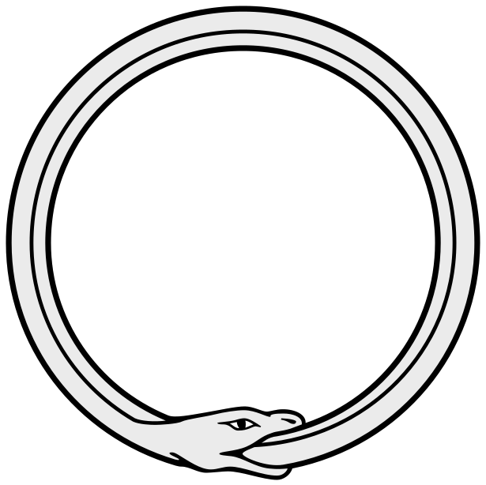

Welcome to the Holocron.Foundation. We aim to preserve the scientific and cultural works of yesterday whilst building out the infrastructure to power the galaxy tommorrow. In order to accomplish these goals, the Holocron.Foundation has undertaken several projects:
- Phoenix
- Communal.Network
- Eden Drive
- Apollo Network
- PyO
- QuickTMI
- Fluent
- UOS
- CiteIt
- Journal
- GIN
- UNGovern
These projects are outlined in more detail in our working paper, and collectively compose Phase I of the Holocron.Foundation, entitled Ouroboros.
According to Encyclopædia Britannica, Ouroboros is an "emblematic serpent of ancient Egypt and Greece represented with its tail in its mouth, continually devouring itself and being reborn from itself. A gnostic and alchemical symbol, Ouroboros expresses the unity of all things, material and spiritual, which never disappear but perpetually change form in an eternal cycle of destruction and re-creation." Phase I of the Holocron.Foundation is named for Ouroboros because it consists of the creation of a galactic network with advanced communication, governance, economic, and scientific capabilities which can consume and improve itself.